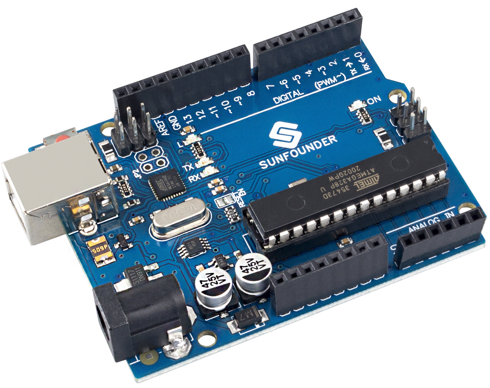

Note
Hallo und willkommen in der SunFounder Raspberry Pi & Arduino & ESP32 Enthusiasten-Gemeinschaft auf Facebook! Tauchen Sie tiefer ein in die Welt von Raspberry Pi, Arduino und ESP32 mit anderen Enthusiasten.
Warum beitreten?
Expertenunterstützung: Lösen Sie Nachverkaufsprobleme und technische Herausforderungen mit Hilfe unserer Gemeinschaft und unseres Teams.
Lernen & Teilen: Tauschen Sie Tipps und Anleitungen aus, um Ihre Fähigkeiten zu verbessern.
Exklusive Vorschauen: Erhalten Sie frühzeitigen Zugang zu neuen Produktankündigungen und exklusiven Einblicken.
Spezialrabatte: Genießen Sie exklusive Rabatte auf unsere neuesten Produkte.
Festliche Aktionen und Gewinnspiele: Nehmen Sie an Gewinnspielen und Feiertagsaktionen teil.
👉 Sind Sie bereit, mit uns zu erkunden und zu erschaffen? Klicken Sie auf [hier] und treten Sie heute bei!
SunFounder R3 Board
{kind=link}
Note
Das SunFounder R3 Board ist ein Hauptboard, das nahezu die gleichen Funktionen wie das Arduino Uno bietet. Beide Boards können abwechselnd verwendet werden.
Das SunFounder R3 Board ist ein Mikrocontroller-Board, das auf dem ATmega328P basiert (Datenblatt). Es verfügt über 14 digitale Ein-/Ausgangspins (von denen 6 als PWM-Ausgänge verwendet werden können), 6 analoge Eingänge, einen 16 MHz Keramikresonator (CSTCE16M0V53-R0), eine USB-Verbindung, eine Strombuchse, einen ICSP-Header und einen Reset-Knopf. Es enthält alles, was zur Unterstützung des Mikrocontrollers benötigt wird; einfach per USB-Kabel an einen Computer anschließen oder mit einem AC-DC-Adapter oder einer Batterie versorgen, um zu starten.
Technische Daten

MIKROCONTROLLER: ATmega328P
BETRIEBSSPANNUNG: 5V
EINGANGSSPANNUNG (EMPFOHLEN): 7-12V
EINGANGSSPANNUNG (GRENZE): 6-20V
DIGITALE I/O-PINS: 14 (0-13, davon 6 mit PWM-Ausgang(3, 5, 6, 9-11))
PWM DIGITALE I/O-PINS: 6 (3, 5, 6, 9-11)
ANALOGE EINGANGSPINS: 6 (A0-A5)
GLEICHSTROM PRO I/O-PIN: 20 mA
GLEICHSTROM FÜR 3.3V PIN: 50 mA
FLASH-SPEICHER: 32 KB (ATmega328P), wovon 0,5 KB vom Bootloader verwendet werden
SRAM: 2 KB (ATmega328P)
EEPROM: 1 KB (ATmega328P)
TAKTFREQUENZ: 16 MHz
LED_BUILTIN: 13
LÄNGE: 68,6 mm
BREITE: 53,4 mm
GEWICHT: 25 g
I2C-Anschluss: A4(SDA), A5(SCL)
Weiterführende Informationen